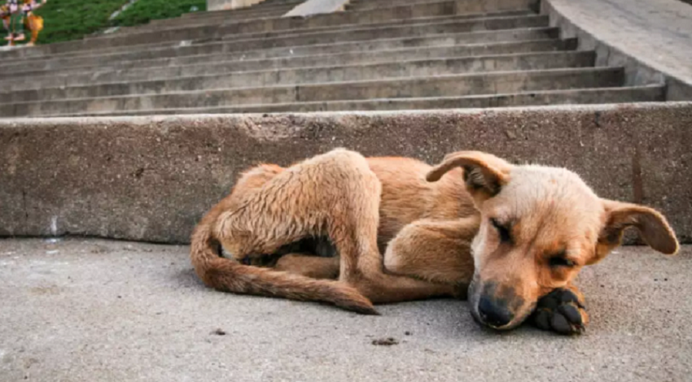
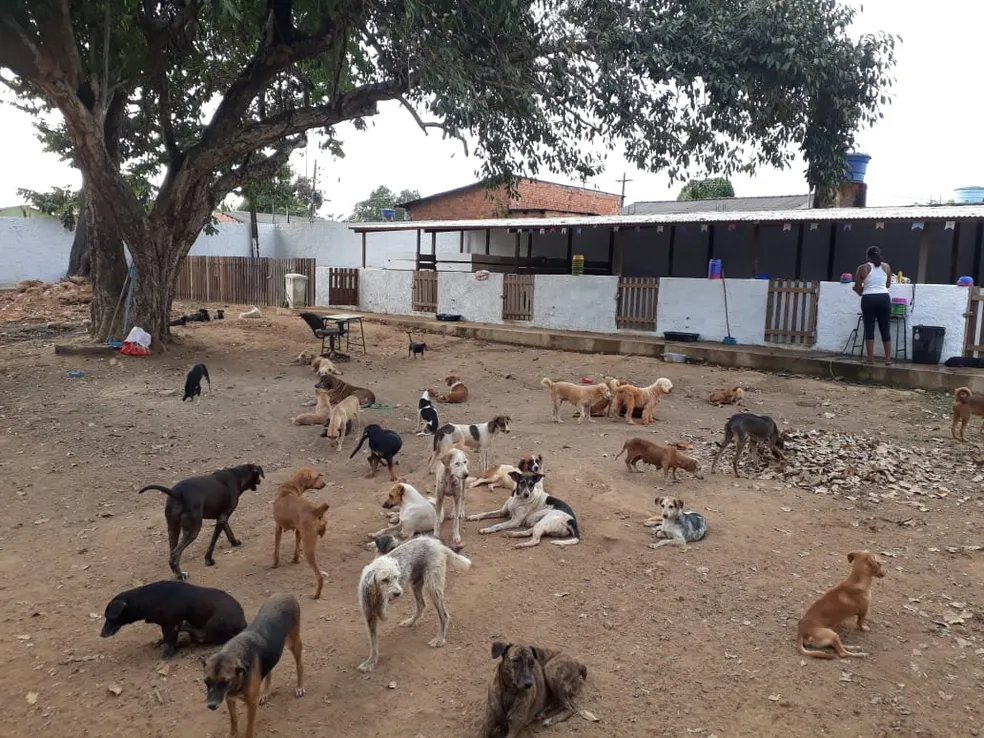

somos a ONG amor canino

criada em junho de 2004 e a 21 anos ajuda cachorro em situações de rua. resgatando, alimentando e cuidando com muito amor
- 2004: fundação da ong amor canino.
- 2010: inauguração do primeiro abrigo.
- 2011: ultrapassamos a marca de 1000 resgates
- 2025: hoje já são mais de 6000 mil resgates
natural de brasilia e criada por um casal apaixonado por animais que viam constantemente o abondono e a judiação com cachorros de rua, resolveram começar a alimenta-los diariamente, essa boa acão insentivou os vizinhos e amigos a ajuda-los, então nasceu a ONG Amor Canino, hoje contamos com voluntarios em varias areas desde as redes sociais a servicos veterinarios, ao longo desses vinte anos foram mais de seis mil cachorros em situações de partir o coração, más graças a ajuda de muitos voluntarios e doadores fomos capazes de continuar com esse trabalho benefico para nossos bichinhos
- +50 voluntarios ativos
- +80% de taxa de adocão bem sucedida
- +2 abrigos com centro veterinarios a disposição dos cachorros resgatados

nossa missão
expandir nosso trabalho no centro oeste e todo brasil, a meta e de 2030 ter abrigos em cada estado do centro oeste, com canils centro veterinarios avancados integrados, para continuar expandindo e salvando os animais ajude-nos com essa missão vamos salvar os cachorros dessa situação, juntos fazemos mais...
- dezembro inalguração do abrigo em goiania
- fevereiro inalguraçãodo abrigo em mato grosso
- onde falta um abrigo da nossa ong?
feira de adoção ⇓
- 01/11 local: parque da cidade pavilhão 7
ajude um doguinho, faça um amigo
contamos com sua ajuda, seja um voluntario ⇓